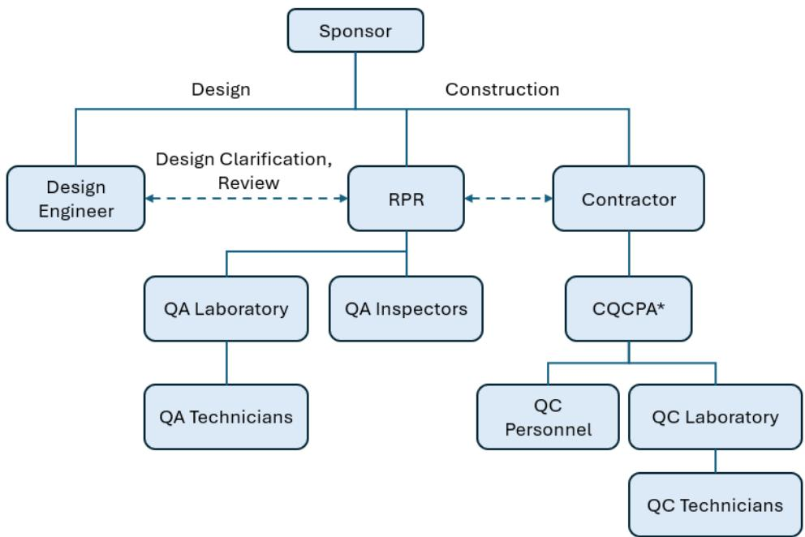
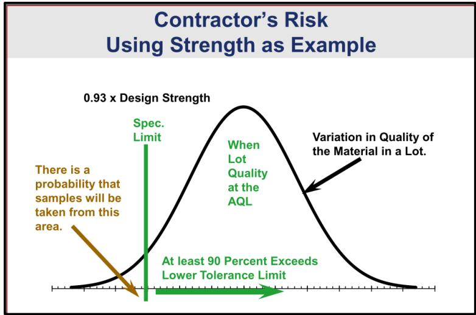
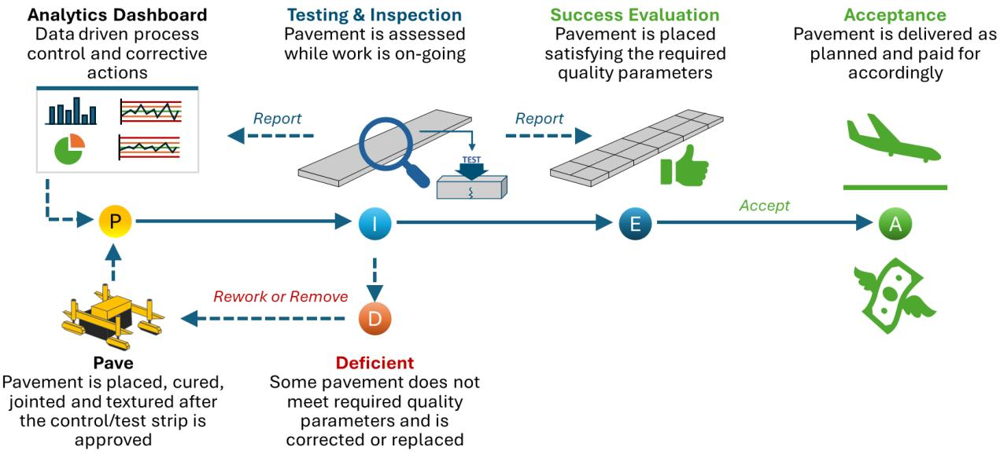
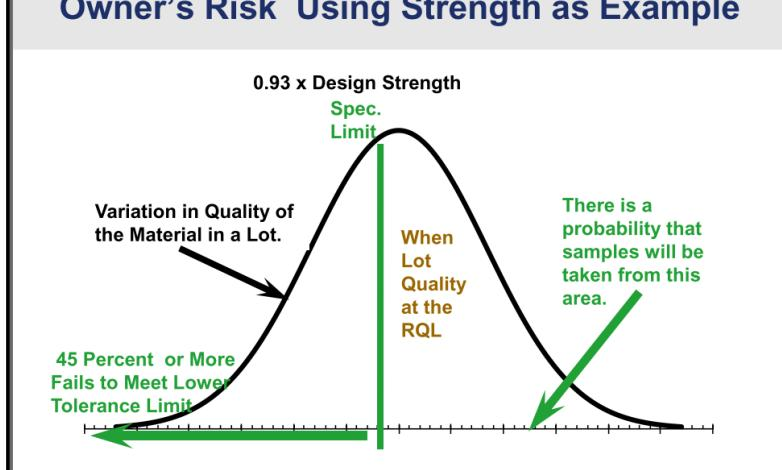

Quality Assurance and Project Communication
In my review, Quality Assurance (QA) coupled with Project Communication is an integrated discipline that simultaneously controls the physical attributes of concrete airfield pavement and governs the flow of information that directs its construction. It evaluates mix composition, strength, air content, thickness and surface finish while monitoring mixing, placement, curing and equipment condition, and it requires that all stakeholder exchanges be timely, accurate, complete and two‑way transparent through meetings and checklists [1][2][3]. The overarching purpose is to prevent misinterpretation of specifications, non‑conforming materials, uncontrolled processes and unsafe pavements by detecting out‑of‑tolerance results early and triggering corrective actions before the pavement’s durability is compromised [1][2]. This function operates from pre‑bid through acceptance, relying on calibrated instruments, qualified personnel, documented sampling plans and comprehensive records to demonstrate compliance with FAA/DOD acceptance criteria [1][3].
Sources (4)
Purpose and quality objectives
The merged guidance indicates that QA together with project communication targets both the physical attributes of concrete pavement and the integrity of information exchange that governs its construction. It evaluates and controls the concrete’s material properties—mix composition, compressive strength, air content, durability—and the resulting dimensional and surface performance such as thickness, edge‑slump tolerance, smoothness, and overall finish quality. At the same time it monitors the associated construction processes (mixing, transport, placement, finishing, curing) and equipment condition to keep process variability within acceptable limits. Parallel to these technical controls, QA ensures that all communication among project participants is timely, accurate, complete, and understandable so that decisions and corrective actions can be made reliably. This is achieved through open, two‑way, transparent information flow in meetings that convey expectations, resolve conflicts, and verify plan and specification details using checklists. [1][2][3]
[1] — Ch. 1 (pp. 24–41), Ch. 2 (pp. 48–77), Ch. 3 (pp. 92–116), Ch. 4 (pp. 140–144), Ch. 7 (pp. 336–355), Ch. 8 (pp. 360–361); [2] — Ch. 2 (p. 23); [3] — 1. Quality Assurance Concepts (p. 12)
Quality Assurance and Project Communication are required to satisfy the fundamental quality requirement that concrete airfield pavement must demonstrably meet all FAA/DOD acceptance criteria. The guides state that this function exists “to prevent a range of problems—misinterpretation of specifications, ambiguous or conflicting provisions, and subjective enforcement—that otherwise lead to non‑conforming materials, uncontrolled construction processes, disputes, schedule delays, and unsafe or non‑durable pavements.” Effective QA therefore depends on “timely, accurate, complete and understandable” information shared among all stakeholders; when communication is limited or poor it “leads to errors, omissions and a reduction in productivity and overall product quality.” The guides further require that communication provide “openness, two‑way exchange, transparency, and timeliness,” using structured project meetings to convey expectations, surface potential conflicts, and clarify plan or specification details. In the absence of such disciplined exchange, “the intent of QC and acceptance provisions can be misunderstood” and “poor communication … is cited as a key cause of defects and rework.” By ensuring that test data are communicated promptly up the chain of command, QA personnel can detect deviations early, suspend work when necessary, and apply corrective actions before pavement quality is compromised. [1][2][3]
[1] — Ch. 1 (pp. 24–41), Ch. 2 (pp. 46–77), Ch. 3 (pp. 92–138), Ch. 4 (pp. 143–144), Ch. 7 (pp. 336–358), Ch. 8 (pp. 360–361), App. B (pp. 408–409); [2] — Ch. 2 (p. 23); [3] — 1. Quality Assurance Concepts (p. 12)
Scope and applicability
The guides concur that “Quality Assurance (QA) and Project Communication are applicable to every material, process, pavement component, and project condition involved in cement‑concrete airport pavement projects.” Accordingly, the procedure’s scope “includes concrete mix, aggregates and any other specialized constituents; design activities, geotechnical/topographic surveys, stockpile handling, base‑course installation, control/test strips, placement, curing, batch‑plant equipment operation, and layer‑by‑layer testing.” It also covers “the concrete mix materials, placement and finishing processes, and the resulting pavement components such as slabs, joints, and sub‑base that constitute an airport runway or taxiway,” and further extends to “acquisition, handling, mixing, transport, placement, finishing and testing of every material incorporated into the project,” including key quality attributes such as “strength, air content, thickness and smoothness.”
In addition, QA and Project Communication are applied throughout the pre‑bid, pre‑work and pre‑placement phases. The procedure employs “concrete‑pavement checklists” to structure “pre‑bid, pre‑work and pre‑placement meetings” that clarify expectations, resolve conflicts, and ensure transparent information flow. [1][3]
[1] — Ch. 1 (pp. 24–41), Ch. 2 (pp. 46–77), Ch. 3 (pp. 95–138), Ch. 4 (p. 140), Ch. 7 (pp. 336–354), Ch. 8 (pp. 360–361), App. B (pp. 408–409); [3] — 1. Quality Assurance Concepts (p. 12)
Quality Assurance (QA) and formal project communication are required throughout every phase of an FAA or DOD airport concrete pavement effort—from acquisition and planning through design, bidding, procurement, construction, and acceptance. The requirement intensifies at each acceptance point: QA is required whenever acceptance of work must follow FAA or DOD specification protocols, at every acceptance point where either FAA reimbursement or sponsor payment depends on proof of compliance, and on FAA airfield paving projects exceeding $500 K where the Resident Project Representative (RPR) monitors the contractor’s Quality Control Program. Activities that are explicitly mandated by FAA Advisory Circulars or DOD UFGS guidance constitute the required baseline; any additional tasks—such as internal designer reviews, daily site meetings, or bespoke QA tools—are optional and may be adopted at the discretion of the project team or contract. Optional measures carry no regulatory weight and are limited to contractual agreement or internal policy. Communication is a core element of QA, but it becomes inappropriate when information shared is inaccurate, untimely, overly detailed, or delivered in a disrespectful tone, because such exchanges are ignored or lead to poor decisions. A further limitation is that FAA rules require acceptance tests and QC tests to be tracked separately; QC data alone cannot be used for the acceptance decision. [1]
The figure below illustrates a key role within this framework: the CQCPA contractor quality control program administrator.

Organizational hierarchy of the Resident Project Representative (RPR) and Contractor Quality Control Program Administrator (CQCPA) [1]The figure displays a project organizational chart where the Sponsor oversees both Design and Construction phases. Under the Construction branch, the Resident Project Representative (RPR) supervises QA Laboratory and QA Inspectors, while the Contractor manages a CQCPA who oversees QC Personnel and QC Laboratory.
[1] — Ch. 2 (pp. 46–68), Ch. 3 (pp. 95–138), Ch. 4 (pp. 143–144), Ch. 7 (pp. 336–349), App. B (pp. 408–409)
Test methods and procedures
“Valid QA results depend on having calibrated equipment and qualified personnel.” Calibrated test instruments must be maintained on a documented schedule; any result that deviates from acceptance criteria triggers “a calibration check on the equipment that generated the result, provided it is applicable, and confirmation through retesting.” The contractor’s quality‑control program provides routine maintenance and calibration of all testing gear, with QC staff tracking each device and identifying items needing service. Personnel performing inspections or acceptance tests must possess defined qualifications—certifications, relevant experience, and training in ASTM/FAA/DOD sampling, transport, curing, and testing procedures. Both the owner’s Resident Project Representative (RPR) or QA Administrator and the contractor’s Quality Control Manager must have documented experience in airfield pavement design, construction, and laboratory testing, while QC technicians must be certified and trained in field sampling and laboratory testing. No specific environmental control requirements are identified; therefore, environmental conditions are assumed to be managed per standard project specifications but are not a stated prerequisite for result validity. [1]
[1] — Ch. 1 (pp. 33–41), Ch. 3 (pp. 95–116), Ch. 7 (pp. 340–355)
Sampling and testing frequency
Sampling locations, quantities, and frequencies are set through a contract‑driven inspection‑procedure template and reinforced by ongoing communication among QA, the Owner/Sponsor, and construction personnel. The QA team determines where, how many, and how often to sample by using the inspection‑procedure template required by the paving contract; this template obligates the planner to list each test, cite the applicable specification section, assign responsibility, identify the material, and explicitly record the sampling location and the minimum test frequency. Quality Assurance also directs the Owner or Sponsor to observe control or test strips using an independent individual who is not part of the QC or RPR staff, conducting those observations on a random basis throughout production. Weekly QC and progress check‑in meetings keep QA, QC, and the construction crew aligned on upcoming work elements, providing advance notice when a phase will require more or fewer tests or a change in test locations. If a test result deviates from the specification, the corrective‑action process calls for retesting and may temporarily raise the monitoring frequency—often to double the normal rate—until the issue is resolved. [1]
The figure below illustrates a control or test strip paving operation, which serves as an example of the independent observation process directed by Quality Assurance.
 Control/test strip paving operation using a slip-form paver. [1]
Control/test strip paving operation using a slip-form paver. [1]
The image displays a large yellow slip-form paver actively laying down a concrete pavement section while workers in high-visibility vests monitor the edge and operate the machinery. This scene depicts the construction of a control/test strip, which is required before production paving to demonstrate the contractor’s ability to manage materials and equipment according to contract documents.
[1] — Ch. 3 (pp. 112–116), Ch. 7 (pp. 346–348), App. B (pp. 408–409)
As a reviewer I find that sampling must be anchored to a designated control strip or test section that serves as the “standard of demonstrated performance.” The QA inspection‑procedure template requires the team to identify each material, cite the applicable specification paragraph, assign responsibility, and specify a sampling location together with a minimum test frequency so that coverage is representative of the material, process, lot, or completed work. Samples are taken from this control strip (or as split specimens when acceptance testing coincides with QC testing) and must follow ASTM‑approved procedures for sampling, transport, curing and breaking to ensure fidelity. Selection of the sample should be performed by an observer independent of QC or RPR staff on a random basis; the observer records conditions and promptly involves the Resident Project Representative if defects are observed. Any result that deviates from acceptance criteria triggers the corrective‑action flow (notification, equipment check, retesting, possible work suspension) until the Resident Project Representative and Construction Superintendent approve a solution. [1]
[1] — Ch. 3 (pp. 95–116), Ch. 7 (pp. 345–348)
Acceptance criteria and tolerances
QA determines acceptability primarily through defined numeric tolerances: strength test results must be at least 90 % of the specified value, with a lower tolerance limit set at 93 %, and an overall allowable deviation of about seven percent is considered reasonably close. Acceptance is also tracked by the FAA’s Percent Within Limits (PWL) metric, where meeting these hard‑number thresholds yields full contract payment; any sublot that fails to meet the minimum strength triggers a remove‑and‑replace action. [1]
The figure below illustrates how these numeric thresholds translate into contractor risk under the FAA’s Percent Within Limits acceptance approach.

Illustration of Contractor’s Risk in FAA’s PWL acceptance approach using strength test results as an example. [1]The figure displays a bell-shaped curve representing the variation in quality of material within a lot, centered around a true value at the Acceptable Quality Level (AQL). The area under the curve to the left of this spec limit is highlighted with an arrow indicating that there is a probability samples will be taken from this area, illustrating the risk of rejecting acceptable material. This visualizes how test results can fall below the required threshold even when lot quality is at the AQL, directly demonstrating the contractor’s risk in the acceptance process described by Quality Assurance standards.
[1] — Ch. 2 (pp. 76–77)
Quality Assurance evaluates concrete pavement by first applying the hard‑metric provisions that have measurable parameters and acceptance thresholds. Each individual measurement—such as thickness, edge‑slump, smoothness or compressive strength—is compared directly to those tolerances; when a result falls within the required limits it is deemed acceptable and can be incorporated into lot‑level calculations. All factors required by the Owner, including sampling, testing, and inspection, are fully evaluated to determine the degree of compliance with contract requirements (“Acceptance”). Results—both individual values and aggregated lot averages—are plotted on control charts that display a target value with defined upper and lower tolerance limits; any point or trend outside those limits signals unacceptable variability and triggers corrective action per the QC plan. At the lot level, metrics such as the FAA’s Percent Within Limits (PWL) are used to confirm that the collective set of results remains inside the same tolerances. If every strength test exceeds 90 % of the specified value (with the lower tolerance limit of 93 %) the Contractor receives full payment (“When all the results of strength testing exceed 90 percent of the specified value … the Contractor is paid 100 percent of the contract price”). When variability, outliers, or insufficient sampling raise reasonable doubt, QA may require additional testing and, if necessary, removal‑and‑replacement of non‑conforming sublots. [1]
The following figure illustrates how these acceptance limits and control charts distinguish between acceptable variability, consistent but non-optimal performance, and results that optimally meet quality targets.
 Concentric circles representing acceptance limits, consistent control, and optimal target achievement. [1]
Concentric circles representing acceptance limits, consistent control, and optimal target achievement. [1]
The figure displays three concentric zones: an outer pink ring, a middle green ring, and an inner white circle containing scattered ‘x’ marks.
[1] — Ch. 1 (pp. 37–41), Ch. 2 (pp. 74–77)
Quality control and process monitoring
The guides agree that consistent quality in production and construction depends on continuous monitoring of several interrelated characteristics. Material-related characteristics include the “quantity of materials required, special restrictions on the quality of allowable concrete materials, subgrade and base surface tolerances, high‑volume production for thicker pavement, and enhanced testing requirements.” Hard performance metrics must be tracked against explicit acceptance thresholds – “Hard metrics – provisions that have measurable parameters and acceptance thresholds” such as strength, air content, thickness and smoothness, with strength test results required to exceed 90 % of the specified value (the lower tolerance limit being 93 %). Process controls are observed in real time, encompassing “process controls, equipment maintenance and calibration, material monitoring and testing, and inspections (i.e., at the plant and construction site)” and documented on control charts that display target values and upper/lower tolerance limits. A disciplined testing‑inspection regime – systematic sampling, laboratory analysis, daily reporting, visual inspections, pre‑paving conferences and coordination with the Resident Project Representative – provides the data needed to keep the work within defined measurement tolerances. Communication characteristics are equally critical; the guides stress “proper communication within and between groups with regards to all elements of the QA program” and require that information exchange be open, two‑way, transparent and timely so expectations remain clear, conflicts are identified early, and plan or specification details are fully understood throughout the project. [1][3]
The following figure illustrates the various sources of construction variability that these quality assurance and communication protocols aim to control.
 Sources of Construction Variability [3]
Sources of Construction Variability [3]
The figure displays four distinct bell curves labeled Material, Process, Sampling, and Testing. These individual distributions are shown to combine into a single, wider distribution at the bottom labeled Composite Variability. The variability observed in concrete paving projects is attributable to four sources: material, process, sampling, and testing.
[1] — Ch. 1 (pp. 24–41), Ch. 2 (pp. 58–77), Ch. 3 (pp. 92–116), Ch. 4 (pp. 140–144), Ch. 7 (pp. 336–355), App. B (pp. 408–409); [3] — 1. Quality Assurance Concepts (p. 12)
Effective QA for FAA/DOD concrete‑airfield projects requires that any observable or measured departure from plan, specification, or established tolerance be treated as a trigger for process adjustment or additional testing. When observations or inspections uncover that constructed elements do not meet or exceed the plan and specification criteria, or when acceptance testing yields failing results or pavement defects, those trends must trigger immediate process adjustments and often require extra sampling and referee testing to resolve the non‑compliance. Out‑of‑tolerance values on control charts, recurring hard‑number violations (e.g., strength < 93 % of specified), consistent drift beyond Percent‑Within‑Limits thresholds, or soft‑metric indications of unacceptability despite acceptable hard metrics likewise demand corrective action and supplemental sampling. Equipment malfunctions or calibration discrepancies that cause test results to migrate away from expected ranges also constitute a trigger; a calibration check on the equipment should be performed before further decisions are made.
If a construction process or processes drift out of control, the Contractor’s crew must have a mindset and the ability to identify the issue(s) as swiftly as possible, formulate remedial action(s), monitor the results after application of the remedial action(s), and verify that the process(es) has returned to an acceptable state of control. Confirmed deviations require immediate notification of the Resident Project Representative (RPR) and the construction superintendent; severe non‑conformances that cannot be resolved promptly lead to work suspension and escalation. After a corrective solution is approved, monitoring frequency should be increased—approximately double the normal rate—until re‑testing confirms return to control.
Communication protocols reinforce these triggers: anytime a process is trending out of compliance, QA should be discussing the matter with QC, and anytime a test result is out of range, quality protocols should flag them and invoke a determination. Weekly QC and progress check‑in meetings provide the forum for reporting trends, coordinating extra testing, and documenting corrective actions. [1]
[1] — Ch. 1 (pp. 33–41), Ch. 2 (pp. 58–77), Ch. 3 (pp. 95–116), Ch. 4 (pp. 140–144), Ch. 7 (pp. 336–358), App. B (pp. 408–409)
Nonconformance and corrective action
When inspection or testing uncovers work or material that does not meet contract‑specified tolerances, the first action is immediate identification and documentation of the deviation. The responsible personnel—typically the Resident Project Representative (RPR) or QA staff—must promptly notify the construction superintendent, foreman, and/or plant operator: “Verbal notification to the Construction Superintendent, work area foreman and/or plant operator.” The finding is then verified by checking equipment calibration, retesting, or collecting additional samples. QC reviews the complete test report and forwards it to QA; no corrective action proceeds until QA has coordinated the response. The RPR monitors the CQCP and must notify the Contractor to correct non‑compliance: “The RPR is required to monitor the CQCP and to notify the Contractor to correct non‑compliance.” If the Contractor fails to remediate, the RPR recommends an appropriate action for the Owner to consider. A formal investigation follows—interviewing the equipment operator and supervisor, tracing the deviation through acceptance‑test and QC data, and determining whether it stems from material variability, testing error, or workmanship: “Deviation from empirical trends should always be investigated, and the cause defined as either variability in testing, materials or contractor workmanship.” Corrective actions (adjusting mix design, re‑working, removal/replacement) are then implemented, documented, and monitored with retesting at an increased frequency until control is restored. If the non‑conformance cannot be resolved on‑site within a reasonable time, the dispute‑resolution protocol is activated: “Dispute resolution – protocol for addressing and working through disputes related to non‑compliance with plan and specification elements (e.g., failing test results, pavement defects), typically tied to acceptance and payment.” Throughout, communication must occur at the lowest organizational level, emphasizing listening and collaborative problem solving: “Effective communication requires a willingness to listen and to speak with the intent to understand differences, participate in the discussion, and work towards a resolution with all participants.” [1]
[1] — Ch. 1 (pp. 33–41), Ch. 2 (pp. 76–77), Ch. 3 (pp. 95–116), Ch. 4 (pp. 140–144), Ch. 7 (pp. 336–355)
Work must be corrected whenever test results or observations show a deviation from the contract, plans, or specifications; after correction the deviation is confirmed through retesting or follow‑up observation before the work can be accepted. If the cause of the nonconformance cannot be resolved promptly, additional qualified contractor personnel are engaged and further investigation—including equipment calibration checks—is performed, and severe unresolved issues trigger suspension of the work detail. Once a satisfactory solution is found and approved by both the Construction Superintendent and the Resident Project Representative, the work may resume, often with an increased testing frequency to monitor the repaired area, and acceptance retesting is conducted; persistent severe nonconformances that cannot be remedied in a reasonable time result in rejection of the work. [1]
The following figure illustrates how control charts are used to monitor specification compliance and facilitate the necessary approvals during this quality assurance process.
 Deviation management flowchart illustrating the process for corrective actions and work acceptance. [1]
Deviation management flowchart illustrating the process for corrective actions and work acceptance. [1]
The figure displays a deviation management flowchart that outlines the procedural steps for handling nonconformances, including determining causes, developing corrective action plans, and implementing them to achieve acceptable results. This process is designed to focus corrective activities on the contractor’s process control and corrective action planning as part of a comprehensive quality assurance strategy. The diagram visually represents the integration of physical attribute evaluation with project communication by showing decision points for approval, retesting, and potential work suspension.
[1] — Ch. 3 (pp. 112–116)
Documentation and reporting
Quality Assurance must keep a complete record of every construction observation and inspection that verifies whether the concrete pavement elements meet or exceed the plan and specification criteria, together with the results of all owner‑provided acceptance tests used to confirm compliance with the specified acceptance thresholds. Quality Assurance must keep a complete record for each required test that identifies the contract specification section, the material and location sampled, the minimum frequency, the exact procedure used, and the observed result, together with any certification submittals referenced in the project’s required sections. Quality Assurance must retain a complete record of every sampling and test performed by the Resident Project Representative to demonstrate conformance and acceptance, including the results, any identified non‑compliance, and the corrective actions recommended or taken. Quality Assurance must keep a complete, traceable record of every inspection observation, acceptance test result, QC test datum, sampling detail, equipment calibration log and laboratory certification that relates to the concrete pavement work; these records are tracked in a dedicated tool that separates but links QA‑acceptance data with QC data for each defined feature.
The documented set therefore includes: • Observation and inspection logs that note whether specified elements meet or exceed plan/specification criteria. • All owner‑provided acceptance test reports, including raw data, sampling location, material tested, test frequency, procedure, and required result thresholds. • Materials sampling and testing results (both on‑site and plant), process‑control observations, daily inspection logs, and DFOW feature inspections that capture visual clues of unusual conditions. • Certifications and training records for all personnel performing QA/QC activities, laboratory accreditation documents, and equipment calibration logs. • Corrective‑action documentation: verbal or written notifications to superintendents/foremen, equipment recalibration, retesting, additional sample collection, referee testing, escalation recommendations to the Owner, and any suspension of work. When a deviation occurs, the corrective action is recorded along with increased monitoring frequency (often double) until acceptance is re‑established. • Communication records that support dispute resolution, including the protocol for sharing full test reports promptly with QC and QA teams so that non‑conformances can be reviewed and remedial steps coordinated before implementation. [1]
The following figure illustrates a practical tool used to capture these observations, serving as an example of the daily check sheets employed by QC personnel.
 Example daily check sheet for QC personnel. [1]
Example daily check sheet for QC personnel. [1]
The figure displays a ‘Quality Control Daily Summary of Activities’ form designed to document the physical attributes and operational conditions of pavement construction. It includes specific sections for recording weather data, batch plant operations, trucking logistics, and testing results such as slump and air content.
[1] — Ch. 1 (p. 33), Ch. 2 (pp. 58–68), Ch. 3 (pp. 112–116), Ch. 4 (pp. 143–144), Ch. 7 (pp. 337–348)
During construction the QA program creates quality records by sampling and testing materials, controlling processes, preparing test reports, and conducting daily reporting and inspections. Quality records are captured on standardized test‑report forms that list the specification section, material, sampling location, minimum frequency, procedure and required result, and they must be submitted to the QA team, contractor foreman and Construction Superintendent within the timeframes defined in the CMP template. The CQCP for the FAA requires daily reporting, and an “assurance conference,” after the submittal of the Quality Control Program (CQCP) and prior to the commencement of work, at which the Contractor presents and discusses the CQCP, is considered essential. Submitted records are attached to formal submittals so that all parties can review raw results. Review occurs in scheduled review meetings and daily inspection‑report reviews; QA personnel witness each event, document visual clues, and examine reports with inspectors before forwarding them to the Owner. The Quality Control Manager and QA function repeatedly review the CQCP and its test results, settling differences at the lowest organizational level, while the Resident Project Representative and QA staff flag any out‑of‑range or trending non‑compliance for investigation and corrective discussion with QC. Senior QA, QC and project leadership evaluate daily metrics; any deviation from empirical trends triggers investigation, corrective action, equipment calibration checks, retesting, or work suspension. For FAA projects acceptance‑test data are entered into a dedicated tracking system separate from routine QC results; for DOD projects QC data may be used directly in the acceptance decision. The reviewed and approved records constitute the factual basis for immediate product acceptance, authorize payment, and create a traceable data set that serves as a performance baseline. This documented evidence supports future performance evaluation, trend analysis, and continuous‑improvement actions across contracts. [1]
The following figure illustrates the integration of contractor QC and process control activities with QA and acceptance.

Integration of contractor QC and process control activities with QA and acceptance. [1]The figure illustrates a linear workflow for airfield pavement construction that integrates quality assurance (QA) and project communication through an Analytics Dashboard, Testing & Inspection, Success Evaluation, and Acceptance phases. It depicts the flow of information via dashed arrows labeled “Report” connecting inspection results to a dashboard for data-driven process control, while solid blue arrows indicate the progression from paving (P) through testing (I), evaluation (E), and final acceptance (A).
[1] — Ch. 2 (pp. 58–68), Ch. 3 (pp. 112–116), Ch. 4 (pp. 143–144), Ch. 7 (pp. 337–355), Ch. 8 (pp. 360–361)
Relationship to long-term performance
The concrete pavement’s measured thickness and smoothness—“Hard metrics – provisions that have measurable parameters and acceptance thresholds.”—are the primary QA indicators that the structure will meet its intended service life and resist distress, because they are directly tied to structural and functional performance and to FAA performance‑based acceptance and payment. The QA process enforces “reasonably close conformity” tolerances; when all the results of strength testing exceed 90 percent of the specified value (with the lower tolerance limit of 93 percent) the Contractor is paid 100 percent of the contract price, indicating that the pavement should achieve its intended service life and resist cracking or rutting. Should any sublot fall below the minimum strength, the specification mandates “remove and replace for any sublot, or lot, that does not meet the minimum specified strength,” ensuring deficiencies are corrected before they can impair long‑term performance. [1]
The following figure illustrates how this Pay-for-Location (PWL) acceptance approach allocates owner risk based on strength test results.

Figure illustrating the Owner’s risk of accepting non-conforming concrete in a lot using strength test results as an example. [1]The figure displays a bell curve representing the variation in quality of material within a lot, centered at a value lower than the specification limit to demonstrate a scenario where the lot is unacceptable. A green arrow indicates that there is a probability samples will be taken from the area exceeding the tolerance limit, illustrating the risk of accepting material based on test results when the actual lot quality is poor.
[1] — Ch. 2 (pp. 74–77)
When hard‑metric results meet the specification but soft‑metric concerns remain—such as questions about surface finish or bug‑hole depth—QA and the Resident Project Representative should initiate follow‑up testing after construction is complete. This may involve repeat sampling of edge‑slump measurements, additional smoothness or surface‑appearance inspections, and targeted investigations to resolve any ambiguity raised by soft metrics. The extra monitoring provides a clearer picture of whether the pavement truly satisfies both measurable thresholds and the owner’s quality expectations. [1]
The following figure illustrates common examples of bug holes that may prompt such post-construction inspections.
 Close-up view of a concrete pavement surface exhibiting small, irregular depressions. [1]
Close-up view of a concrete pavement surface exhibiting small, irregular depressions. [1]
The image displays a gray concrete surface characterized by numerous small, shallow pits and depressions scattered across the texture.
[1] — Ch. 2 (pp. 74–75)
References
- T. L. Cavalline, G. Voigt, J. Stempihar, J. Lafrenz, T. Van Dam, M. Boyle, D. Johnson, and Rohan Reddy Jonna, "Best Practices Manual: Quality Control and Quality Acceptance of Concrete Airport Pavement," University of North Carolina at Charlotte, Rep. ACPTP-2022-4, 2025. [Online]. Available: https://www.cptechcenter.org/wp-content/uploads/2026/03/ACPTP-2022-4_QC_QA_of_concrete_airfield_pvmt_manual_w_cvr_508.pdf
- T. L. Cavalline, G. J. Fick, and A. Innis, "Quality Control for Concrete Paving: A Tool for Agency and Industry," National Concrete Pavement Technology Center, 2021. [Online]. Available: https://www.cptechcenter.org/wp-content/uploads/2021/12/QC_for_concrete_paving_web.pdf
- G. Fick, P. Taylor, R. Christman, and J. M. Ruiz, "Field Reference Manual for Quality Concrete Pavements," The Transtec Group, Rep. FHWA-HIF-13-059; DTFH61-08-D-00019-T-10002, 2012. [Online]. Available: https://www.cptechcenter.org/wp-content/uploads/2018/08/hif13059.pdf
- P. Taylor, "The Use of Ternary Mixtures in Concrete," National Concrete Pavement Technology Center, Rep. DTFH61-06-H-00011; InTrans Project 05-241, 2014. [Online]. Available: https://www.cptechcenter.org/wp-content/uploads/2014/08/ternary_mix_manual-508-compliant-w-Iowa-DOT-statements.pdf